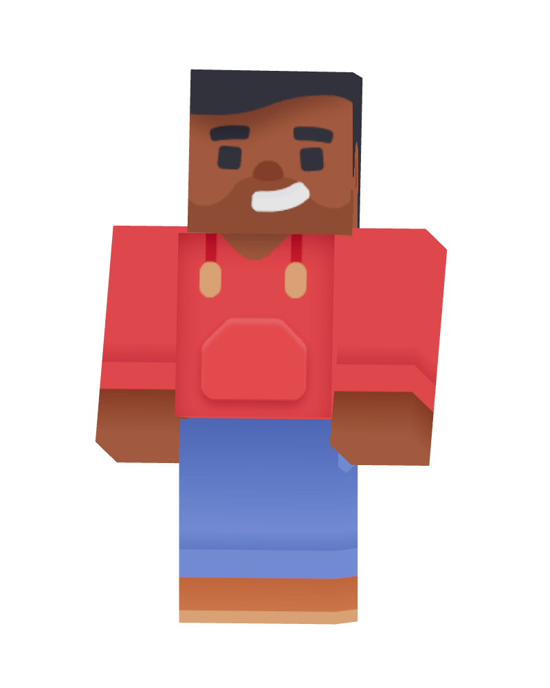
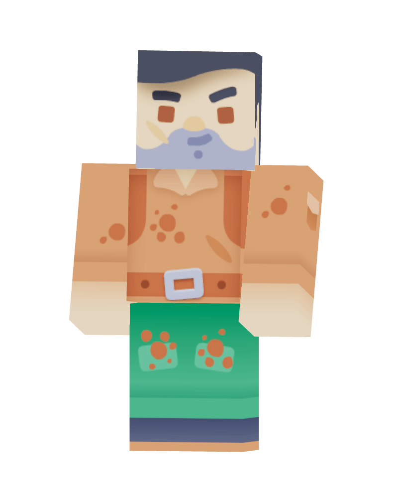
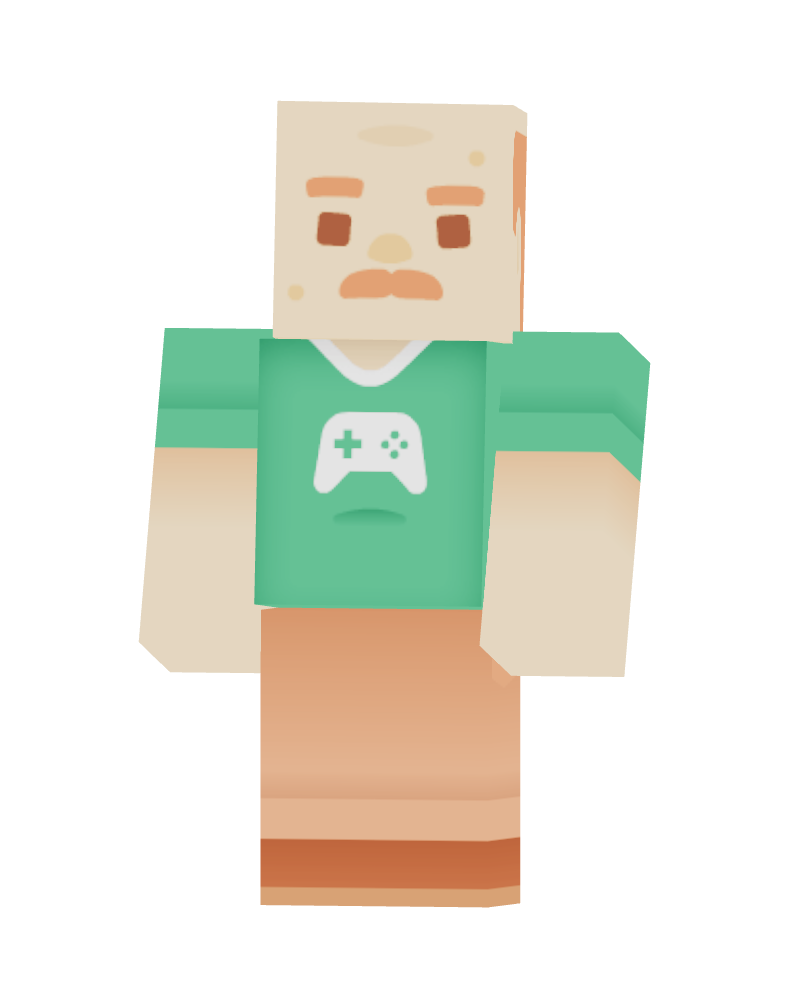
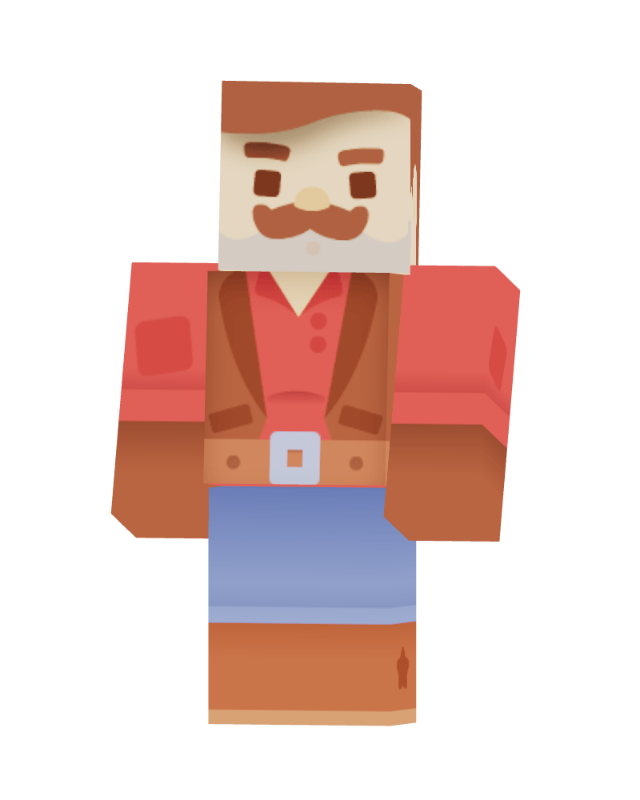

●JigneshVillage batsmanSuggested starting point
Same palette. Same story. Same renderable 3D assets. Different components and decisions.
Choose a person → inspect their story → develop a spin-off
Full-size PNG ↗Season 1 · Crime drama
Choose whose story to continue.

●
○
○
The whole cast stays recognizable while one person’s detail changes. Selecting a card is separate from starting work.
Editors browsing a large cast and returning to familiar characters.
Less theatrical. In production, only the selected character needs live 3D; the grid can use rendered portraits.
Meet one character → explore their perspective → develop their story
Full-size PNG ↗Village batsman · 19
The best player in the village must choose between his talent and tomorrow’s wage.
A single 3D character gets the stage. Named thumbnails keep every choice visible; navigation does not depend on dragging or swiping.
First-time exploration and the live character-to-spin-off demo.
Slower to compare a large cast. Keep a grid switch and never auto-rotate the selection.
Choose a canon moment → choose its perspective → develop the spin-off
Full-size PNG ↗Same event. Someone else’s story.
The action and result stay fixed. The meaning can change.
◇ Core canon · read onlyA cricketing triumph becomes the moment he understands he is paid to lose.
The shared event explains the product visually. Character and canon moment are selected together, before creating a spin-off.
Editors who know the season and want to build around a strong crossing point.
More editorial context is required. The cast-first route remains available for newcomers.
Names, roles and selection remain visible. Full biographies and beat lists are secondary. This applies NN/g’s recognition-over-recall and progressive-disclosure guidance.
Recognition and recall ↗Card selection changes the inspected character. A distinct primary action continues the workflow. Option B exposes direct selection and has no automatic carousel movement.
Carbon selectable tiles ↗These portraits were rendered from Kenney’s CC0 Blocky Characters GLB files using Three.js. Each used model includes a rig and 27 animation clips. Stock identities and clothing are stand-ins, not the final cast art.
Asset source and license ↗Recommended foundation: 01. Use the cast library for everyday work. Option 02 can become an optional character view; option 03 is a focused editorial tool. These are design hypotheses, not usability-tested outcomes.